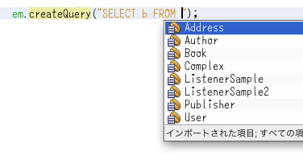
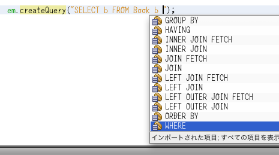
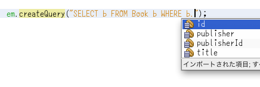

HttpServerとJAXBでAPIを組込む
前に小酒さんとJavaのプロセス間通信についてお話しました。
んで、私も監視というかAPIというか、そんな感じのアレを簡易で良いのでサクッと組込む必要が出てきました。 という訳で HttpServer とJAXBでサクッと組込もうと思います。
ほい、サンプルコード。
import com.sun.net.httpserver.HttpContext;
import com.sun.net.httpserver.HttpExchange;
import com.sun.net.httpserver.HttpHandler;
import com.sun.net.httpserver.HttpServer;
import java.io.IOException;
import java.io.OutputStream;
import java.net.InetSocketAddress;
import java.util.Date;
import javax.swing.JOptionPane;
import javax.swing.SwingUtilities;
import javax.xml.bind.JAXB;
import javax.xml.bind.annotation.XmlRootElement;
public class Monitor {
public static void main(String[] args) throws Exception {
InetSocketAddress address = new InetSocketAddress(8080);
int backlog = -1;
HttpServer server = HttpServer.create();
server.bind(address, backlog);
try {
HttpContext context = server.createContext("/log");
HttpHandler handler = new LogHandler();
context.setHandler(handler);
server.start();
SwingUtilities.invokeAndWait(new Runnable() {
@Override
public void run() {
String message = "ダイアログを閉じると鯖終了";
JOptionPane.showMessageDialog(null, message);
}
});
} finally {
server.stop(10);
}
}
public static class LogHandler implements HttpHandler {
@Override
public void handle(HttpExchange exchange) throws IOException {
Log log = new Log();
log.result = Result.SUCCESS;
log.timestamp = new Date();
int statusCode = 200;
int chunked = 0;
exchange.sendResponseHeaders(statusCode, chunked);
try (OutputStream out = exchange.getResponseBody()) {
JAXB.marshal(log, out);
out.flush();
}
}
}
@XmlRootElement
public static class Log {
public Result result;
public Date timestamp;
}
public enum Result {
SUCCESS, FAILURE
}
}
HttpServerはアドレス渡して準備して、パス渡してコンテキスト作って、ハンドラ登録すればおk。 Java SEでもHTTP鯖立てるの簡単ですね。 わーい。
今回はアプリケーションの処理結果とタイムスタンプを持ったログを返す感じのハンドラを書いてみました。 ログはPOJOで表現していますが、JAXBでXMLに変換してレスポンスに書き出しています。 このハンドラは次のようなXMLを返します。
<?xml version="1.0" encoding="UTF-8" standalone="yes"?>
<log>
<result>SUCCESS</result>
<timestamp>2013-01-30T23:08:37.482+09:00</timestamp>
</log>
XMLベースのWeb APIなら構築するのは簡単ですね。 わーい。
まあもうちょい多機能なAPIを構築したかったらJerseyを突っ込みますが要件によってはこれで十分かなー、とか思ったりしました。
NetBeans 7.2.1でJPQLの補完するー
こんばんは！ em.cQ と打って control + space で createQuery を補完するうらがみです。
もうキャメルケースでの補完が無かったら生きて行けません。 これはEcliなんとかでも出来ます。 たぶんIDEAでも出来るでしょう。
本題。 NetBeansではJPQLの補完もできます、という話。

FROM も。

エンティティ名も。
WHERE や、
プロパティも。
演算子も。

という感じです。 でもこれローカル変数に突っ込むと補完してくれないのが残念です。

あと@NamedQueryに書くJPQLでも補完できます。

ローカル変数に突っ込んだときも補完が効いてくれるようになるともっと嬉しいですねー。 簡単ですが、そんな感じでー。